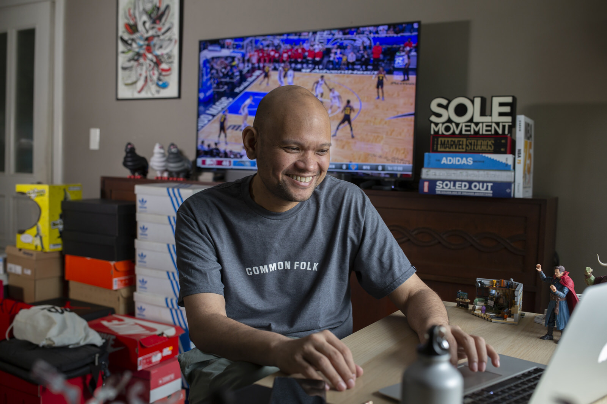

Martin David on the Heart and Sole of Philippine Sneaker Culture
08/09/2022 · 1 min read
By now, talking about the popularity of sneakers seems redundant. This humble and functional footwear has steadily moved from the underground scene to the forefront of fashion and popular culture. From sought-after brand collaborations to fashion houses’ high-brow iterations, to the underrated gems found off-the-shelf of shopping malls, there is a sneaker on every corner and price point. Following a strong decade when it comes to sales and cultural impact, it is exciting to see how sneakers and the global sneaker community would further its reach in the coming years.

Late last year, the Jordan Brand opened in Bonifacio Global City, bringing in the legendary brand’s first flagship store in Southeast Asia. This attests to the vitality of the Filipino sneaker subculture that is only getting more and more popular as time marches forward. Within the growing circle of sneaker enthusiasts and experts, there are people whom many refer to as cornerstones of this community. One of the prominent figures of the local sneaker community is Martin David, better known for his sneaker media platform Sole Movement. From one sneaker release to another and from one sneaker trade show to the next, he established a name in cultural journalism. Martin and his platform have chronicled monumental drops, collaborations, and cultural events over the decades including the highly-coveted Air Jordan IV “Manila”. While Martin David and his platform are in the status of prominence, he kept the discussion with us strictly within the topic of the local sneaker scene and Sole Movement. His modesty and fondness for being behind the scenes are prevalent in our short chat with him. We talked about Sole Movement, the early decades of the sneaker scene, the sneaker scene now, and where it is headed.